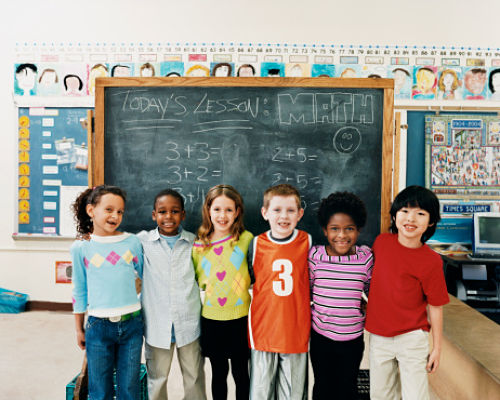

Get To Know The Facts On Autism!
Did you know? In the United States, Autism can be found 1 in 42 boys and 1 in 189 girls. According to Autsim Speaks, "Autism, or autism spectrum disorder, refers to a range of conditions characterized by challenges with social skills, repetitive behaviors, speech and nonverbal communication, as well as by unique strengths and differences. We now know that there is not one autism but many types, caused by different combinations of genetic and environmental influences."
Get To Know Your Numbers!
- 44% of children on the sprectrum with average or above-average intellect with an IQ higer than 85.
- 10% of children who also are savants, or patients showing remarkable memory and skill in a specific area, such as music.
- 20% of children have enlarged brains as infants and toddlers